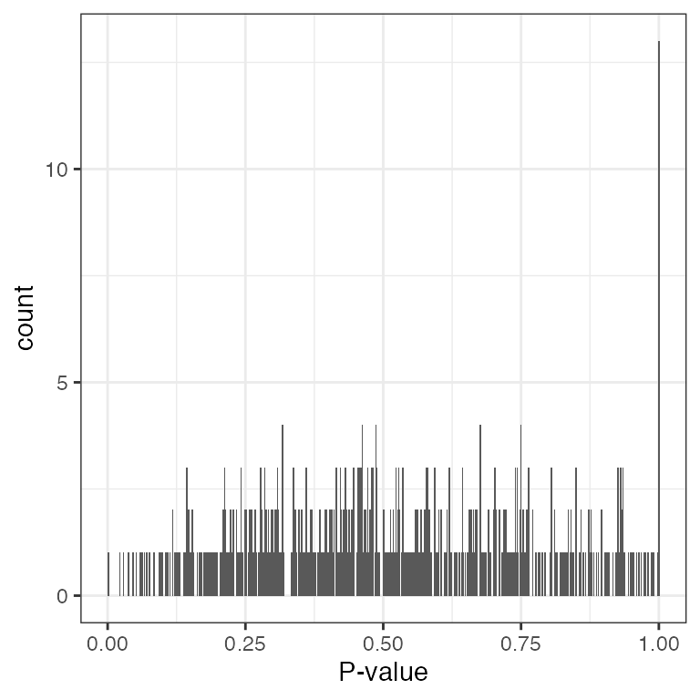

04_models.RmdLoad libraries
We show that a negative binomial distribution (or equivalently gamma-Poisson) fits our example data set for the ASV counts well. We test the null hypothesis, H0, that the ASV counts have a negative binomial distribution using a chi-square test statistic.
The testing procedure is as follows:
Estimate parameters of negative binomial from the data.
We draw 1000 simulations from the negative binomial with the parameters estimated from the data.
We compute the test statistic on osberved data and simualted data.
We compute P-values for all ASVs.
We plot the distribution of P-values.
We adjusted P-values for multiple testing.
Note: we used phyloseq after removing DNA contaminants using BARBI (next subsection).
devtools::load_all()
psE_BARBI## phyloseq-class experiment-level object
## otu_table() OTU Table: [ 5808 taxa and 86 samples ]
## sample_data() Sample Data: [ 86 samples by 16 sample variables ]
## tax_table() Taxonomy Table: [ 5808 taxa by 6 taxonomic ranks ]
## phy_tree() Phylogenetic Tree: [ 5808 tips and 5807 internal nodes ]
# set threshold values (require at least 5 samples with 25 reads)
threshold <- kOverA(5, A = 25)
psE_BARBI <- filter_taxa(psE_BARBI, threshold, TRUE)
psE_BARBI## phyloseq-class experiment-level object
## otu_table() OTU Table: [ 648 taxa and 86 samples ]
## sample_data() Sample Data: [ 86 samples by 16 sample variables ]
## tax_table() Taxonomy Table: [ 648 taxa by 6 taxonomic ranks ]
## phy_tree() Phylogenetic Tree: [ 648 tips and 647 internal nodes ]
ps <- psE_BARBI
ps <- prune_taxa(taxa_sums(ps) > 0, ps)
ps## phyloseq-class experiment-level object
## otu_table() OTU Table: [ 648 taxa and 86 samples ]
## sample_data() Sample Data: [ 86 samples by 16 sample variables ]
## tax_table() Taxonomy Table: [ 648 taxa by 6 taxonomic ranks ]
## phy_tree() Phylogenetic Tree: [ 648 tips and 647 internal nodes ]
dd <- otu_table(ps) %>% t() %>%
data.frame()# samples * asv
rownames(dd) <- NULL
colnames(dd) <- NULL
estnb <- matrix(0, ncol=2, nrow=ncol(dd))
#for each asv, fit the nb and estimate prob and theta
for(x in 1:ncol(dd)){
fit.nb <- fitdistr(dd[,x], densfun = "negative binomial")
estnb[x,] <- cbind(fit.nb$estimate[[1]] ,fit.nb$estimate[[2]] )
}
prob <- estnb[,2]/(estnb[,1]+estnb[,2])
theta <- estnb[,1]
estnb <- cbind(estnb, prob, theta)
estnb <- as.data.frame(estnb)
colnames(estnb) <- c("size", "mu", "prob","theta")
estnb <- estnb %>% as_tibble()Simulate 1000 of replicates for each ASV. For each replicate, compute chi-square test statistic. Compare the observed chi-square value with these 1000 test statistic values.
dd <- otu_table(ps) %>% t() %>%
data.frame()# samples * asv matrix
rownames(dd) <- NULL
colnames(dd) <- NULL
# For each ASV, compute expected count given NB(mu, size)
# this will be used for observed count and 1000 MC simulations
expectedCount <- function(n,
mu,
size,
breaks){
# make bins and compute expected counts for each bin assuming NB
n * diff(pnbinom(breaks,
mu = mu,
size = size))
}
chiSquareSim <- function(x,
mu,
size,
breaks){
breaks <- breaks
observed <- table(cut(x, breaks))
n <- length(x)
expected <- expectedCount(n,
mu = mu,
size = size,
breaks = breaks)
# test statistic
chi_square <- (sum((observed - expected)^2 / expected))/(length(breaks)-1)
return(list(chi_square = chi_square))
}
comPvalueForEachASV <- function(x, b){
# x is the observed ASV count
# b is the number of bins to compute chi-square test statistic. This is used to create breaks.
#for each asv, fit nb and estimate mu and size
fit.nb <- fitdistr(x,
densfun = "negative binomial")
size <- fit.nb$estimate[[1]]
mu <- fit.nb$estimate[[2]]
# for each asv, simulate 1000 data from NB(with estimated parameters)
sim_x <- matrix(rnbinom(length(x)*1000,
size = size,
mu = mu),
nrow = length(x)) %>%
data.frame()
# create same number of bins = b using the range of sim_x and x
breaks <- c(min(sim_x,x) - .1, seq(min(sim_x, x), max(sim_x, x), length.out = b), Inf)
# For each replicate of the ASV, compute chi-square statistic
sim_results <- apply(sim_x, 2, function(y){
chiSquareSim(y,
mu = mu,
size = size,
breaks = breaks)$chi_square
})
# compute observed chi-square statistic value
chi_square0 <- chiSquareSim(x,
mu = mu,
size = size,
breaks = breaks)$chi_square
p_value_sim <- mean(sim_results >= chi_square0)
return(list(p_value_sim, chi_square0, sim_results))
}
# we can load mc_test which incldues the goodness of fit test
devtools::load_all()
dd <- otu_table(ps) %>% t() %>%
data.frame()# samples * asv matrix
rownames(dd) <- NULL
colnames(dd) <- NULL
p_value_asv <- numeric()
chi_square0 <- numeric()
sim_results <- list()
for(i in 1:ncol(dd)){
p_value_asv[i] <- mc_test[[i]][[1]]
chi_square0[i] <- mc_test[[i]][[2]]
sim_results[[i]] <- mc_test[[i]][[3]]
}
ggplot(data = tibble(p_value_asv = p_value_asv),
aes(x = p_value_asv)) +
geom_histogram(bins = 1000) +
xlab("P-value") +
theme_bw()